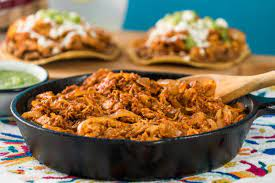

Ingredientes:
- 2 pechugas de pollo deshuesadas y cocidas, o carne de res cocida y desmenuzada
- 2 cucharadas de aceite de cocina
- 1 cebolla blanca, picada
- 2 dientes de ajo, picados
- 1 lata de tomates pelados en cubos
- 2-3 chiles chipotles secos (ajusta el número según tu preferencia de picante)
- Sal y pimienta al gusto
- Tortillas de maíz para servir
- Lechuga, crema, queso y otros ingredientes opcionales para acompañar
Preparación:
- En una sartén grande, calienta el aceite de cocina a fuego medio.
- Agrega la cebolla y el ajo picados y sofríelos hasta que estén dorados.
- Añade los tomates pelados en cubos y los chiles chipotles secos (puedes desvenarlos y quitar las semillas para reducir el picante).
- Cocina la mezcla a fuego medio-bajo durante unos 15 minutos, revolviendo ocasionalmente, hasta que los tomates estén suaves y la salsa se haya espesado.
- Agrega la carne desmenuzada y cocina por otros 10 minutos, mezclando bien para que la carne absorba la salsa.
- Condimenta con sal y pimienta al gusto.
- Sirve la tinga caliente en tortillas de maíz y acompáñala con lechuga, crema, queso u otros ingredientes de tu elección.
